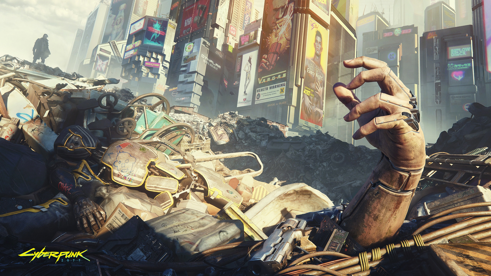
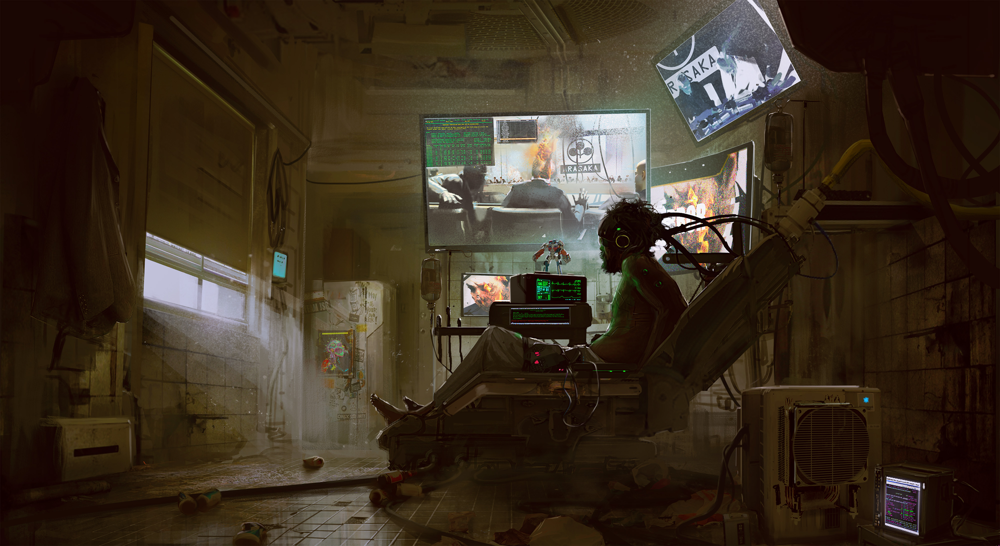
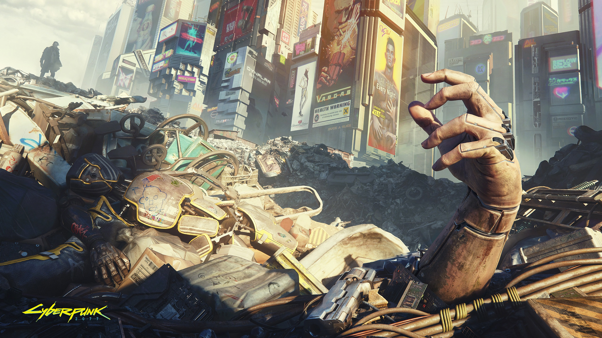
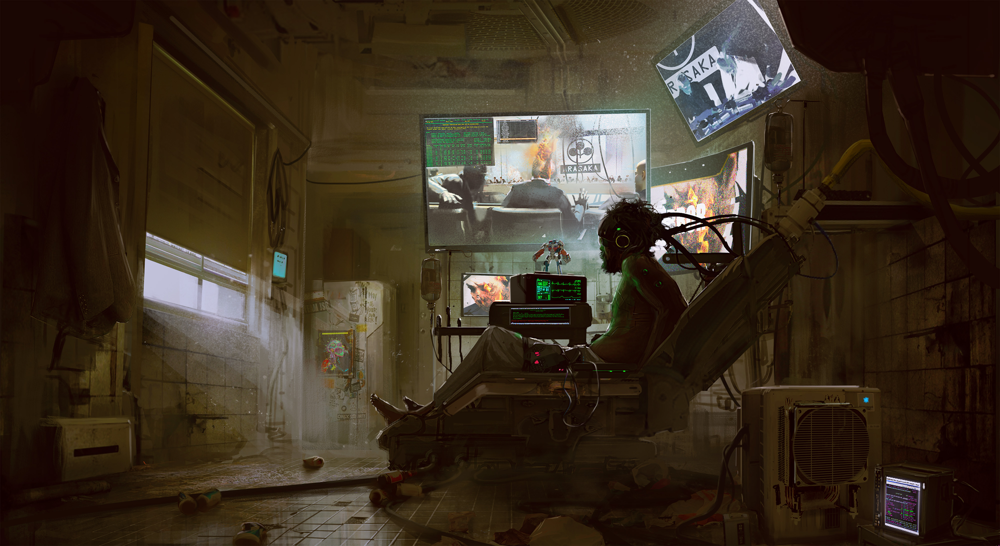

Cyberpunk 2077
Desarrolladora
CD Project RedDistribuidora
CD Project
Director
Adam Badowski
Productor
Richard Borzymowski
Diseñador
Konrad Tomaszkiewicz
Guionista
Marcin Blacha
Artista
Katarzyna Redesiuk
Compositor
Marcin Przybyłowicz
Plataformas
Microsoft Windows
Fecha de estreno
19 de noviembre de 2020
<---HOME-----
ZIP manual
Cyberpunk 2077
Cyberpunk 2077 es un videojuego de Accion-RPG en desarrollo por CD Projekt RED, basado en los juegos de rol de mesa Cyberpunk de Mike Pondsmith.
Argumento
En el juego el jugador será arrojado a este oscuro futuro. La metrópolis de Night City es un lugar creado para contarnos la historia de un individuo que creció en sus calles y que trata de levantarse y encontrar un modo de sobrevivir entre las mafias locales y las megacorporaciones, en una ciudad de suciedad y decadencia.
Drogas, violencia, pobreza y exclusión no han desaparecido en el año 2077 y la gente ha seguido estando como lo era hace siglos, egoísta, de mente cerrada y débil. Pero no sólo los fantasmas del pasado preocupan a la humanidad, sino que nuevos problemas han aparecido. Los psicópatas se acumulan, y las calles están llenas de adictos a una nueva forma de entretenimiento: el Braindance, una forma barata de experimentar las emociones y el estímulo de otras personas que viven una vida más emocionante.
Datos Claves
- Juego de rol basado en lápiz y papel del famoso RPG.
- Diseñado y Escrito por Mike Pondsmith.
- Promete ser diseñado para jugadores maduros y exigentes que esperan ser tratados seriamente.
- Será con muchos detalles fiel al estilo de Rol de Accion, con una historia compleja y apasionante.
- Los jugadores podrán experimentar el mundo a través de sus propios personajes, únicos elegidos de diferentes clases.
- Se estima que se podrá cambiar el modo en 1º persona y 3º persona.
- Los jugadores se enfrentarán a decisiones morales, sus acciones influirán en los acontecimientos del mundo en general y el destino de los individuos que lo rodean.
- Será desarrollado bajo el motor REDengine 4.
- Tendrá modos Multijugador Online para algunas misiones.
Productos relacionados
Guía
La guía oficial completa de Cyberpunk 2077 elaborada por Piggyback es un extenso libro que abarca todos los aspectos del juego. Incluye detalles de todos los desafíos y características, ofrece instrucciones paso a paso para progresar por toda la aventura y además explica en detalle todos los sistemas principales.
Bundle Xbox One X Edición Limitada
Xbox anunció en abril de 2020 una línea personalizada de productos de hardware de Cyberpunk 2077, que incluye el bundle Xbox One X Edición Limitada de Cyberpunk 2077 y el mando inalámbrico de Xbox Edición Limitada de Cyberpunk 2077, para aquellos jugadores que quieran sumergirse por completo en el estilo futurista de Night City.
Galeria


 


